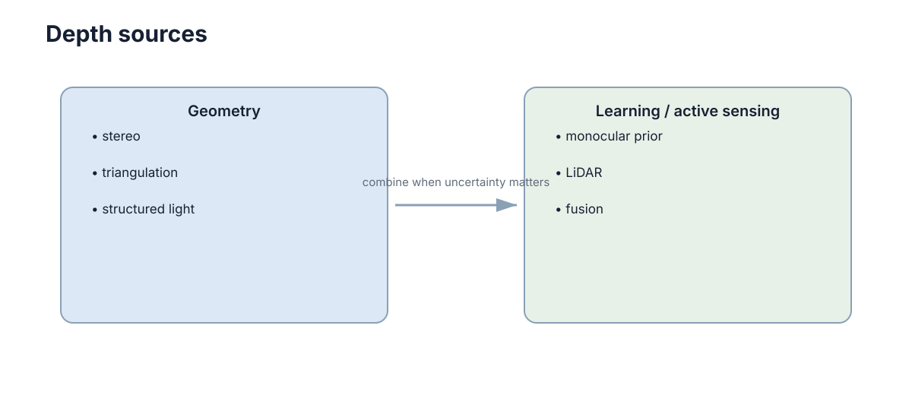

Depth, 3D Vision & Point Clouds
二维图像记录了每个像素的位置与外观，却没有记录它离相机多远。深度与点云的全部价值，是把二维投影重新扩展回三维几何；而真正的工程难点不在“拿到深度”，而在“把深度换算到机器人可用的坐标系、时刻与可信度上”。 避障要的是 \(base\) frame 下的最近障碍距离，建图要的是 \(map\) frame 下的一致结构，抓取要的是物体表面的法向与局部曲率——这三样都不是原始深度图能直接给出的。
这一章沿着一条数据链推进：深度来源 → 反投影 → 坐标变换 → 预处理 → 配准 → 特征。链上每一步都会引入误差，而且误差在下游会被放大：一个 2% 的深度相对误差，在 20 m 处就是 0.4 m 的空间偏差，足以让机器人把一条狭窄通道判成可通行或不可通行。

深度可以来自不同物理机制
深度不是一个传感器名词，而是一类物理量。常见来源包括：
- 双目视差：利用两个相机的几何三角关系；
- RGB-D / ToF：主动测量光的传播或调制信息；
- LiDAR：直接测距形成稀疏或较密集三维点；
- 单目深度网络：从图像外观学习相对或绝对深度。
它们的量程、噪声、密度和失败场景都不同。选型的第一判据不是“精度最高”，而是“在任务关心的距离区间内，误差是否小于任务余量”。1 m 内做抓取，结构光的毫米级误差绰绰有余；100 m 外做环境感知，双目视差的误差随距离平方增长，而 LiDAR 仍然稳定。
| 深度来源 | 物理机制 | 典型量程 | 输出形态 | 主要误差来源 | 典型失败场景 |
|---|---|---|---|---|---|
| 双目视差 | 三角测量，视差 \(d=u_L-u_R\) | 0.3–20 m | 稠密视差图 | 误匹配、纹理缺失 | 白墙、重复纹理、逆光 |
| 结构光 / RGB-D | 主动投射图案并解码 | 0.2–5 m | 稠密深度图 | 多路径、遮挡 | 阳光直射、玻璃、吸光物体 |
| ToF | 测量调制相位差 | 0.1–10 m | 深度图 | 相位缠绕、环境光 | 强反射、多机互扰 |
| LiDAR | 飞行时间测距 | 1–200 m | 稀疏三维点 | 反射率、雨雾衰减 | 镜面、玻璃、水雾 |
| 单目深度网络 | 从外观学习先验 | 相对深度 | 稠密但非度量 | 训练分布偏移 | 未见场景、尺度模糊 |
表中最后一行要特别警惕：单目网络的输出常常只有相对顺序而非真实米制尺度，直接当几何使用会破坏整个下游的度量一致性。若必须使用，应借助稀疏 LiDAR 或双目三角测量的少量真实点做尺度对齐。
误差增长规律同样是选型判据。双目中基线为 \(b\)、焦距为 \(f\)，视差误差 \(\delta d\) 引起的深度误差近似为
即深度误差随距离平方增长。这解释了为什么双目在 2 m 处可能优于 LiDAR，在 50 m 处却完全不可用。
已知深度后，像素可以反投影成三维点
相机内参为 \((f_x,f_y,c_x,c_y)\)，像素 \((u,v)\) 的深度为 \(Z\)，则
def back_project(u, v, z, fx, fy, cx, cy):
x = (u - cx) * z / fx
y = (v - cy) * z / fy
return x, y, z
这一步把图像坐标重新映射到相机三维坐标系。注意三点：第一，公式假设针孔模型且已去畸变，若图像仍带桶形畸变，必须先校正；第二，\(Z\) 的单位决定输出的单位，混用毫米与米是最常见的低级错误；第三，反投影不会创造信息，它只是把“带噪声的深度值”搬运到三维，噪声结构被原样保留。
反投影后得到的是有序深度图对应的点集（organized cloud），保留 \((u,v)\) 与点的对应关系在后续做语义投影时非常有用。
反投影的完整坐标链
单步反投影只到相机系，而机器人需要的是世界系。完整链条是三级变换：像素 → 相机系 → 机器人系 → 世界系。
第一级由内参完成，把 \((u,v,d)\) 变成相机光学系下的点：
第二级由相机外参 \((R^{b}_{c},t^{b}_{c})\) 完成，把点搬到机器人本体系：
第三级由机器人位姿 \((R^{w}_{b},t^{w}_{b})\) 完成，把点搬到世界系（或地图系）：
三级合并可以写成单个刚体变换 \(p_w=T^{w}_{b}T^{b}_{c}p_c\)，但必须逐级检查，因为每一级的误差来源完全不同：内参是标定误差，外参是安装与温漂误差，位姿是状态估计误差。把它们塞进一个矩阵里调试，等于放弃了归因能力。
| 步骤 | 输入 | 需要的量 | 主要误差来源 | 典型量级 |
|---|---|---|---|---|
| 去畸变 | 原始像素 | 畸变系数 \(k_1,k_2,p_1,p_2\) | 标定残差 | 亚像素到数像素 |
| 内参反投影 | \((u,v,d)\) | \(f_x,f_y,c_x,c_y\) | 焦距与主点标定 | 0.1%–0.5% 相对误差 |
| 相机 → 机器人 | \(p_c\) | \(T^{b}_{c}\)（手眼标定） | 安装偏差、震动 | 0.2–2 cm 平移 |
| 机器人 → 世界 | \(p_b\) | 实时位姿 \(T^{w}_{b}\) | 里程计漂移 | 每米 1%–2% |
| 时间补偿 | 多传感器点 | 时间戳与速度 | 同步与插值 | 速度 × 时差 |
表中最后一行常被忽略：若点在世界系中还要按运动补偿，时差 \(\Delta t\) 与速度 \(v\) 直接产生 \(v\Delta t\) 的位置错误。以 1.5 m/s、30 ms 时差计，就是 4.5 cm——足以让点云和图像在近处“看起来还行”，在远处完全错开。时间与坐标的耦合细节见 多模态感知。
一个常见的实现是把这三级写成一个查询函数，让每个点带上时间戳后一次性完成变换：
def to_world(u, v, d, K, T_b_c, pose_provider, stamp):
x = (u - K.cx) * d / K.fx
y = (v - K.cy) * d / K.fy
p_c = (x, y, d, 1.0)
pose = pose_provider.at(stamp) # interpolate pose at capture time
return pose @ T_b_c @ p_c
这里的关键不是矩阵乘法，而是 pose_provider.at(stamp)：必须用采集时刻的位姿，而不是处理时刻的位姿。用最新位姿去变换旧点云，正是点云拖影与错位的根源。
点云必须放到统一坐标系才能融合
LiDAR 点在 lidar frame，相机反投影点在 camera frame，机器人规划通常使用 base 或 map frame。不同来源的点云若没有正确外参，就无法直接叠加。
因此点云处理几乎总伴随刚体变换 \(p_B=T^B_Ap_A\)。这句话背后有三个易错点：
- 方向约定：\(T^{B}_{A}\) 是“把 A 系的点表示成 B 系”，还是“A 系在 B 系中的位姿”？两种约定互为逆，写反了会让远处的点云朝反方向飞出去。工程上应统一为前者，并在类型名里写清楚。
- 链式拼接顺序：\(T^{w}_{b}T^{b}_{c}\) 不能交换。旋转与平移不交换，顺序错等于把平移也旋转了一遍。
- 时间一致：坐标系本身随机器人运动，所以“统一坐标系”不仅是空间问题，也是时间问题。
| 来源 | 原生 frame | 到 map 需要的链 |
精度瓶颈 |
|---|---|---|---|
| 相机反投影 | camera_optical |
\(T^{map}_{base}T^{base}_{cam}\) | 手眼标定 + 位姿 |
| LiDAR | lidar |
\(T^{map}_{base}T^{base}_{lidar}\) | 安装角 + 位姿 |
| IMU 轨迹 | imu |
外参 + 时间对齐 | 零偏与积分 |
| 里程计点云 | odom |
\(T^{map}_{odom}\) | 漂移累积 |
验证方法很直接：在场景里放一个已知尺寸的标定板或柱子，检查它在融合后的点云中是否仍为已知尺寸、是否与图像中的边缘对齐。尺寸和边缘双双对齐，才说明链条正确。
点云裁剪与下采样
原始点云可能包含数十万点。体素下采样、距离裁剪、地面去除等预处理可以显著减少后续计算量。关键是保留任务需要的几何结构，而不是追求所有点都留下。
一个典型处理接口按固定顺序组织步骤：
def prepare_cloud(cloud, transform):
cloud = cloud.remove_non_finite()
cloud = cloud.crop(min_range=0.2, max_range=30.0)
cloud = cloud.voxel_downsample(voxel_size=0.05)
return transform.apply(cloud)
先清理非法值和任务外范围，再下采样，最后转换到统一坐标系，可以避免后续模块重复处理原始大点云。这个顺序不是随意的：
remove_non_finite必须最先：NaN 和 Inf 会污染所有后续统计量（均值、协方差、法向），也会让 KD-tree 构建失败。crop在downsample之前：先按距离和视场裁掉无关点，再下采样，可以避免把算力浪费在很快就被丢弃的远处点上。transform放在最后：在传感器原生 frame 下裁剪的边界（min/max range）语义清晰，变换后再裁就容易把“自车周围”和“传感器周围”搞混。
| 预处理步骤 | 典型参数 | 作用 | 代价 | 风险 |
|---|---|---|---|---|
| 非有限值清理 | — | 保证统计量有效 | 极低 | 无 |
| 距离裁剪 | 0.2–30 m | 剔除自车与过远噪声 | 低 | 裁剪过窄会丢掉远处障碍 |
| 视场裁剪 | 前向 ±60° | 聚焦任务方向 | 低 | 侧向盲区 |
| 体素下采样 | 0.03–0.20 m | 降点数、稳密度 | 中 | 体素过大丢细节 |
| 地面去除 | RANSAC / 高度阈值 | 减少平面冗余 | 中高 | 坡道与台阶被误删 |
| 离群点滤波 | 邻域点数阈值 | 去飞点 | 中 | 薄结构被当噪声删掉 |
点云配准与 ICP
当两台传感器（或同一传感器在两个时刻）观测同一场景，需要求它们之间的刚体变换，这就是配准。ICP（Iterative Closest Point）的核心思想是“先假设对应关系，再求解最优变换，然后重新找对应”：
- 对源点云 \(P\) 中每个点 \(p_i\)，在目标点云 \(Q\) 中找最近点 \(q_{\sigma(i)}\)；
- 固定对应关系，求解使代价最小的刚体变换 \(T\)；
- 用 \(T\) 变换源点云，重复第 1 步，直到变换增量或均方误差收敛。
对应的优化问题是
闭式解由对应点质心对齐 + SVD 分解得到，这就是点到点（point-to-point）代价。另一种更常用的是点到面（point-to-plane）代价，它只惩罚沿目标点法向 \(n_i\) 方向的偏差：
| 代价函数 | 度量 | 收敛速度 | 对初值敏感度 | 适用场景 |
|---|---|---|---|---|
| 点到点 | 欧氏距离平方 | 慢，迭代多 | 高 | 稠密、各向同性点云，简单可靠 |
| 点到面 | 法向投影残差 | 快 3–10 倍 | 中 | 结构化场景（墙面、地面、车道） |
| 点到线 | 沿边缘方向残差 | 快 | 中 | 稀疏 LiDAR + 边缘丰富环境 |
| 彩色 ICP | 距离 + 颜色差 | 中 | 高 | 有稳定光照的 RGB-D |
ICP 的两个固有弱点必须记住。第一是局部极小：它只在当前对应关系附近下降，初值偏离太远会收敛到错误对齐（例如把相邻两堵平行的墙整体平移一格）。第二是对应关系依赖：最近点不等于真实对应点，在稀疏或重复结构（栅栏、货架、隧道）中会产生大量错配。工程对策是先做粗配准（特征匹配、RANSAC、全局描述子），再用 ICP 精配；并在迭代中引入鲁棒核（如 Huber）抑制错误对应的影响。
工程实现时有几个参数直接决定成败：
- 最大对应距离（max correspondence distance）：超过该距离的点对不计入代价。它既是抗错配的手段，也是一条“信任半径”——设置过小会让 ICP 只做微小修正，设置过大会把错误对应一起优化；
- 收敛判据：同时检查变换增量（如平移 < 1 mm、旋转 < 0.01°）与均方误差的相对下降率，只用一个容易过早停止；
- 最大迭代次数：必须有硬上限，否则退化场景（如隧道）会一直游走而无法收敛；
- 降采样比例：源点云只取一部分（例如 10%）参与对应搜索，可以大幅提速而几乎不损失精度。
判断 ICP 是否“骗了你”的方法很简单：看残差在迭代中的曲线。健康收敛是单调快速下降并迅速变平；若残差下降到某个值后震荡，说明对应关系在两组候选之间跳变；若残差很大却仍在下降，说明它正在把错误的两个结构强行对齐。残差小不等于对齐正确——把两个平面沿平面方向平移，残差可以一直是零。
点云特征与描述子
原始点本身没有语义，特征让点云可被匹配、分类和识别。
法向量估计是最基础的局部特征。对点 \(p\) 取 \(k\) 近邻，计算去中心化的协方差
其特征值 \(\lambda_1\ge\lambda_2\ge\lambda_3\) 描述局部形状：\(\lambda_1\gg\lambda_2\approx\lambda_3\) 是平面（法向为最小特征值对应的方向），\(\lambda_1\approx\lambda_2\gg\lambda_3\) 是边缘，三者相近则是角点或体素化后的散点。法向的可靠性几乎完全由邻域尺寸决定：太小则对噪声敏感，太大则把曲面和棱边平均掉。
FPFH（Fast Point Feature Histogram） 在法向基础上统计邻域内点对的法向夹角分布，得到一个 33 维的描述子，对刚体变换不变、对噪声相对稳健，是粗配准阶段的常用选择。它的计算依赖每个点的邻域搜索，因此对点数非常敏感，通常要与下采样配合使用。
| 体素尺寸 | 平均点数/叶 | 法向稳定性 | FPFH 区分度 | 配准代价 |
|---|---|---|---|---|
| 0.02 m | 少（5–15） | 差，噪声放大 | 高但含噪 | 极高 |
| 0.05 m | 中（15–40） | 好 | 高 | 中，常用折中 |
| 0.10 m | 多（40–120） | 很好 | 中 | 低 |
| 0.20 m | 很多 | 过平滑 | 低，细节丢失 | 很低 |
经验上 0.05 m 附近是室外 LiDAR 的常用折中点；近距离抓取（0.5 m 内）应显著减小，因为 0.2 m 的体素会把一个杯子压成一个点。体素尺寸应随任务尺度缩放，而不是全局统一。
特征还有一个容易忽视的性质：描述子的可重复性依赖于预处理的一致性。如果建图时用 0.05 m 体素、定位时用 0.10 m 体素，同一处墙壁算出的 FPFH 分布会有系统性差异，匹配分数随之下降，表现为“回环检测时灵时不灵”。因此特征提取的体素尺寸、邻域半径、法向朝向规则必须作为管线参数固化下来，并与地图一起版本化。
深度误差会随距离和传感方式变化
双目在远距离时视差变小，深度误差迅速增大；LiDAR 可能在玻璃、强反射或雨雾条件下产生异常；单目网络则可能受训练分布影响。规划器不应把所有深度值都当成同等可靠的精确真值。
把误差写成“距离的函数”是工程上最有用的做法。视差误差近似随 \(z^{2}\) 增长；LiDAR 的单点测距误差基本与距离无关（约厘米级），但点密度随距离下降；结构光误差随距离近似线性。把这三条曲线画在同一张图上，就能直接读出“在哪个距离区间该用谁”。
| 距离 | 双目（基线 0.1 m, 1 px 视差误差） | LiDAR 单点 | 结论 |
|---|---|---|---|
| 1 m | ~0.01 m | ~0.02 m | 双目占优 |
| 5 m | ~0.25 m | ~0.02 m | LiDAR 占优 |
| 20 m | ~4 m | ~0.03 m | 双目不可用 |
| 50 m | — | ~0.05 m | 只能依赖 LiDAR |
规划器应把深度不确定度一起传递下去：给障碍物膨胀量加上 \(\sigma_z\) 的若干倍，而不是固定膨胀一个常数。“近距离不信双目、远距离不信视觉”应当写成代码里的距离阈值，而不是留在工程师的记忆里。
不确定度还可以用相对误差的形式传播。若深度相对误差为 \(\varepsilon=\delta z/z\)，则反投影出的点沿视线方向的误差与之成正比，而横向误差由角分辨率决定、基本不随距离增长。这意味着一个远距离点的误差椭球是沿视线拉长的细长形，而不是球形——在做最近邻搜索或障碍膨胀时，用球形膨胀会低估沿视线方向的危险、高估横向的危险。严格的系统会把每个点的 \(3\times3\) 协方差一并传递，而不是只传一个标量 \(\sigma_z\)。
点云密度并不等于信息量
重复采集同一平面的大量点会增加计算量，却未必增加新的几何约束。下采样应优先保留边缘、曲率变化和稀疏区域的结构信息。处理参数需要根据定位、避障或重建任务分别选择，而不是所有任务共享同一体素大小。
判断“保留是否合理”的标准是：删掉这些点之后，下游的几何约束是否变少？ 一面墙上的 10 万个点提供的是同一个平面约束，删到 1000 个几乎不损失信息；而一条细电线杆上的 200 个点可能是唯一的通行边界，删到 20 个就会让规划器判错可通行区域。
因此特征保留式下采样（保留高曲率、边缘、稀疏区域）通常优于均匀体素下采样，代价是实现更复杂、参数更多。实际系统的常见组合是：均匀下采样保证最坏情况下的速度上限，特征保留下采样保证关键结构不被抹掉。
按任务划分，保留策略应当不同：
- 避障：优先保留靠近机器人、位于运动方向、以及高度上可能阻挡通行的点；远处地面点可以大幅抽稀；
- 定位：优先保留几何特征丰富且稳定的区域（墙角、柱子、立面），平坦地面点对配准贡献很小；
- 抓取：优先保留目标物体附近的高密度点，远处环境点直接裁掉；
- 重建：优先保留曲率高的区域与观测角度较少的区域，密度不均会直接影响网格质量。
这四种任务的“好点云”定义互不相同，所以点云预处理不应做成一个全局共享的固定环节，而应当由各任务声明自己的抽取需求。
下一步：深度与点云进入统一坐标系之后，就要和相机、IMU 的数据在时间和空间上对齐，见 多模态感知。若关心点云如何变成地图，读 地图构建与 SLAM；若关心深度误差如何进入状态估计的协方差，读 机器人传感与状态估计；检测框如何与点云联合使用，见 目标检测与图像分割。